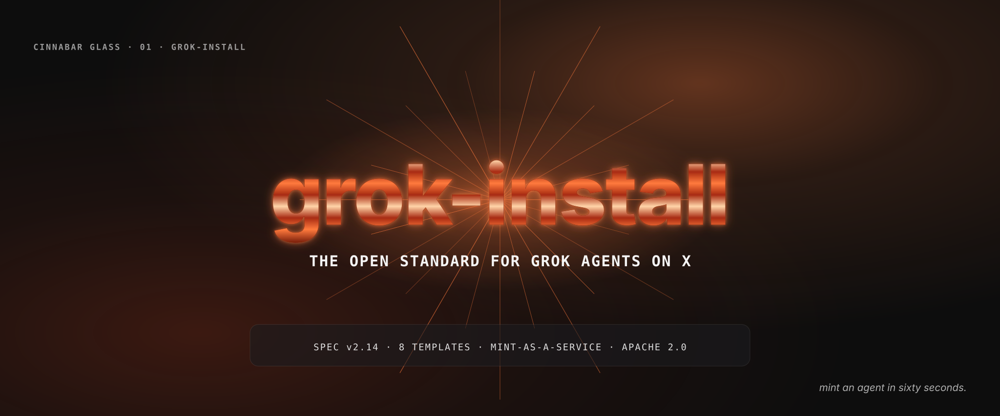

grok-install is a YAML manifest spec, a Python validator, and a GitHub Action that turn any AI agent into a one-click install on X. One declarative grok-install.yaml file describes the agent's runtime, prompts, tools, safety profile, and X integration. The v2.14 schema is locked; eighteen ready-to-fork templates cover everything from a daily brief bot to a multi-agent research swarm.
Quickstart (60 seconds)
# 1. Install the validator
pip install grok-install
# 2. Validate a manifest
grok-install validate path/to/grok-install.yaml
# 3. Install with the cross-platform runtime
# See xlOS: https://github.com/AgentMindCloud/xlOSThree Ways In
The Standard
The v2.14 manifest schema and the fourteen sibling standards that describe reusable agent components.
read the spec →The Templates
Eight production-ready core templates and ten curated community examples. Fork, edit, ship.
browse templates →The Runtime
xlOS — the cross-platform installer that turns a validated manifest into a running agent on macOS, Linux, or Windows.
open xlos →